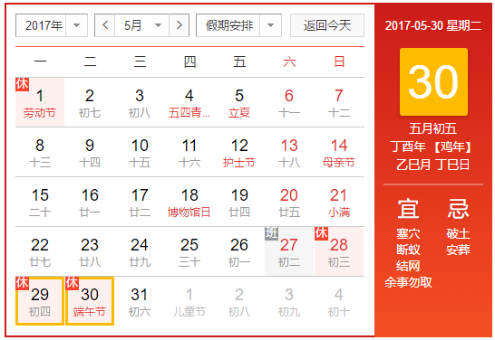

端午节来源
端午节为每年农历五月初五，又称端阳节、午日节、五月节、夏五、重五等。端午节是中国汉族人民纪念屈原的传统节日，以围绕才华横溢、遗世独立的楚国大夫屈原而展开，传播至华夏各地，民俗文化共享，屈原之名人尽皆知，追怀华夏民族的高洁情怀。端午节有吃粽子，赛龙舟，挂菖蒲、蒿草、艾叶，薰苍术、白芷，喝雄黄酒的习俗。“端午节”为国家法定节假日之一，并被列入世界非物质文化遗产名录。
端午节为每年农历五月初五，又称端阳节、午日节、五月节、夏五、重五等。端午节是中国汉族人民纪念屈原的传统节日，以围绕才华横溢、遗世独立的楚国大夫屈原而展开，传播至华夏各地，民俗文化共享，屈原之名人尽皆知，追怀华夏民族的高洁情怀。端午节有吃粽子，赛龙舟，挂菖蒲、蒿草、艾叶，薰苍术、白芷，喝雄黄酒的习俗。“端午节”为国家法定节假日之一，并被列入世界非物质文化遗产名录。